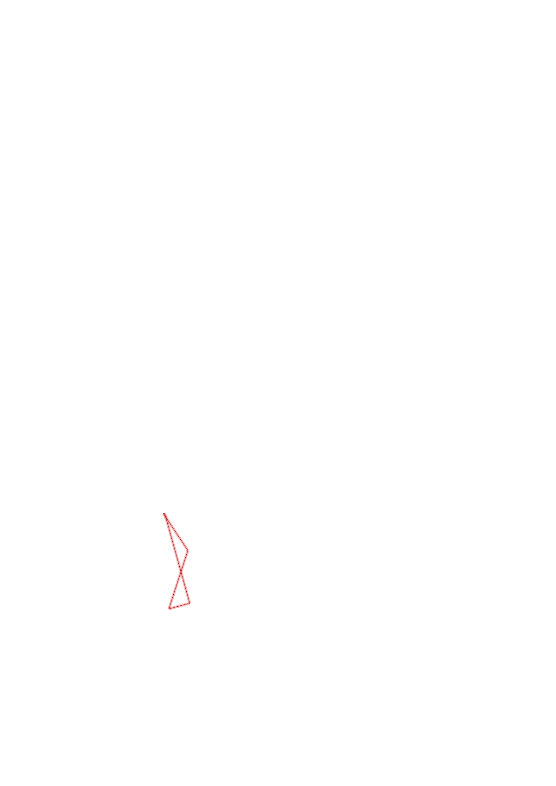
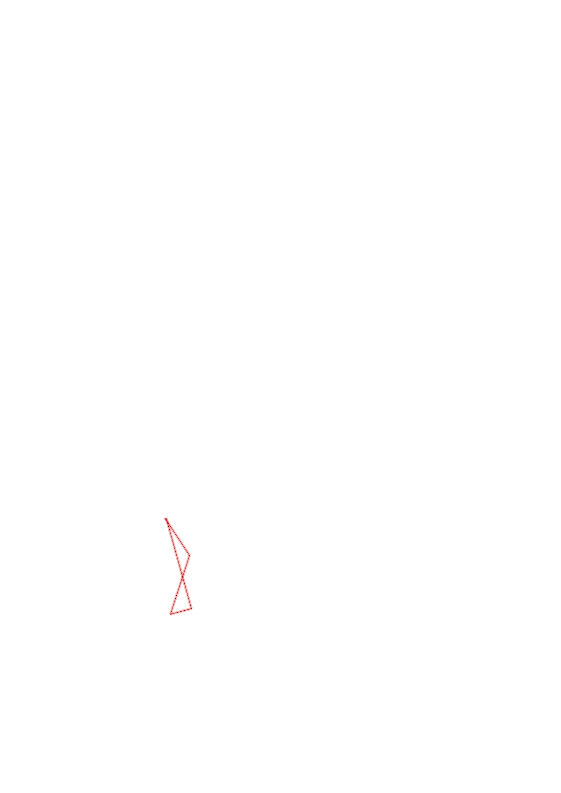
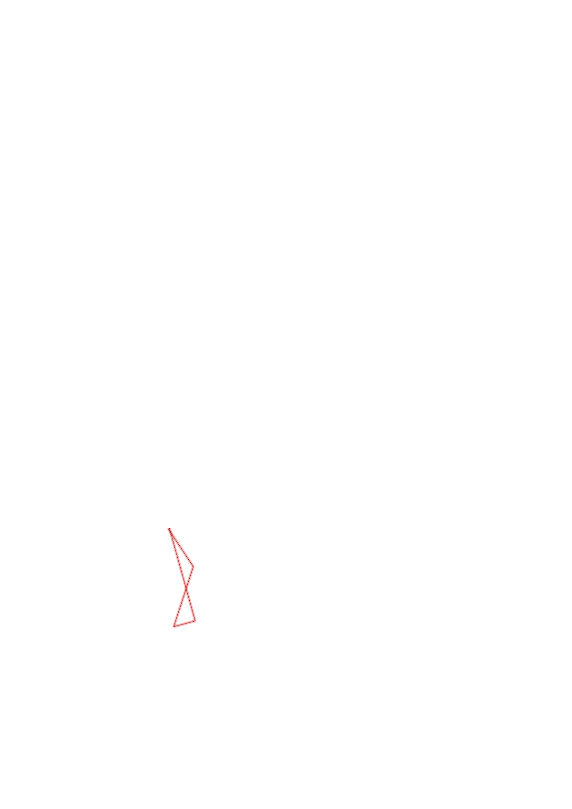

| Control | Points | Time Punched | Distance | Your Time | Pace | Place | Fastest Time | Median Time | % Behind Fastest |
|---|---|---|---|---|---|---|---|---|---|
| 37 | 30 | 0.25 | 0:08:26 | 33:44 | 2 / 3 | 0:08:15 | 0:08:26 | 2% | |
| 31 | 30 | 0.35 | 0:05:18 | 15:08 | 2 / 5 | 0:04:32 | 0:07:29 | 16% | |
| 42 | 40 | 0.12 | 0:01:49 | 15:08 | 5 / 9 | 0:00:52 | 0:01:49 | 109% | |
| Finish | 0 | 0.53 | 0:38:27 | 1:12:32 | 4 / 4 | 0:03:42 | 0:06:11 | 939% |
